保留你喜歡的「六角鏡片」輪廓，把裡面換成一顆半透明的玻璃立方：前三面用實線、後三面透過玻璃以虛線看得到，每一面畫的是那一面對應的指標（輪動箭頭＝資金面、K 棒＝技術面、鏈狀節點＝產業面；透過去看得到法人柱＝籌碼面、營收線＝基本面、脈衝＝事件面）。
風格走 HUD（抬頭顯示器）：深底、青色發光線、外圈刻度、角框、掃描線。兩種畫法 —— A 是「鏡片本身就是立方體」（等角），B 是「鏡片裡浮著一顆透視立方」。每張右邊是縮成 48／24px 的樣子：小尺寸自動拿掉指標圖，只留輪廓，才認得出來。
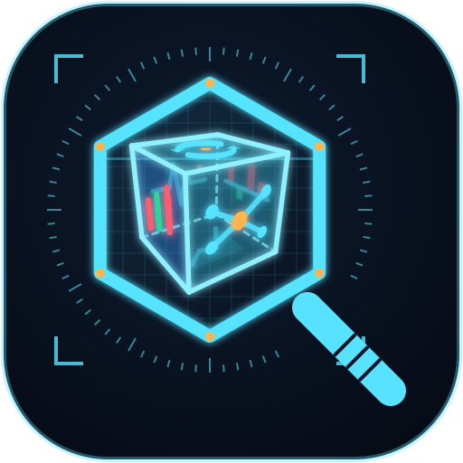
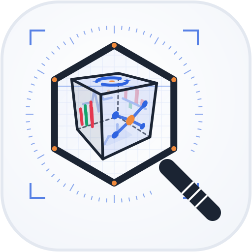
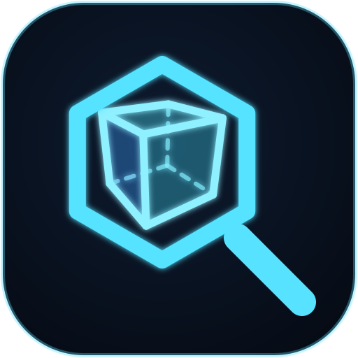
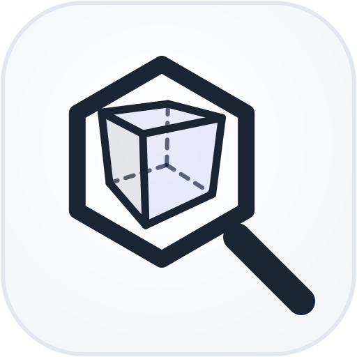
鏡片＝框、立方＝被觀察的市場。立方有真正的透視（近大遠小），12 條稜線全看得到，最有「透視」與科技感；外框的角框與刻度就是 HUD 的語言。大圖適合首頁、分享卡、App 啟動畫面。
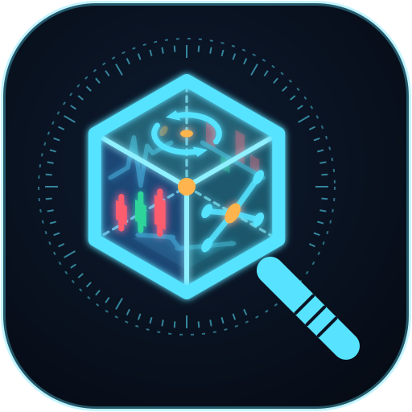
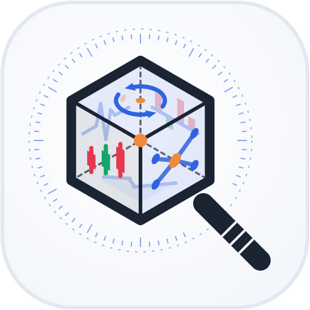
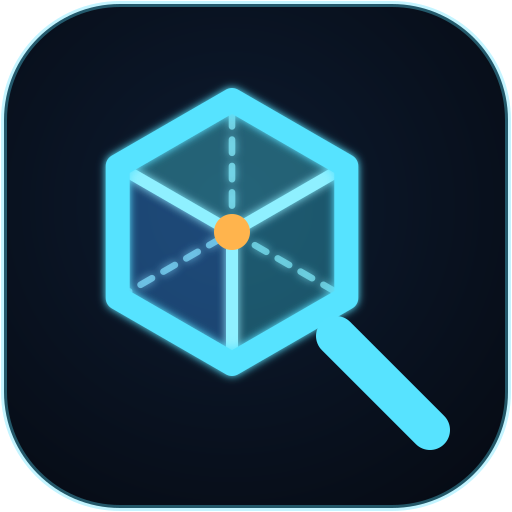
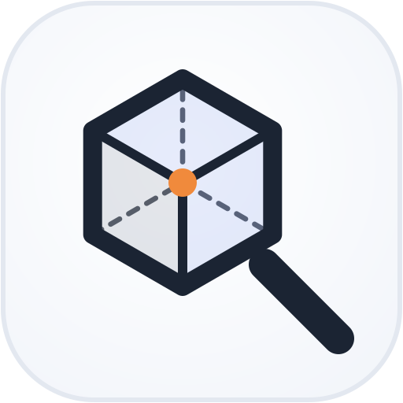
直接延續上一輪的 C：六角形就是立方體的輪廓，中間的橘點是前後兩個頂點重疊的地方（像準星）。比 B 更幾何、更好縮小，分頁圖示（favicon）用 A 的小圖最清楚。
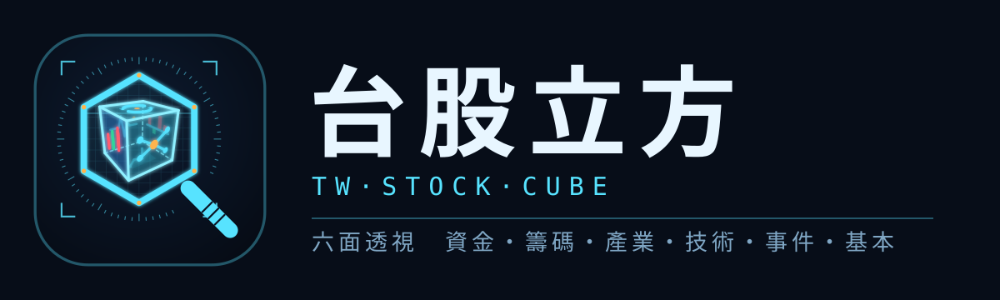
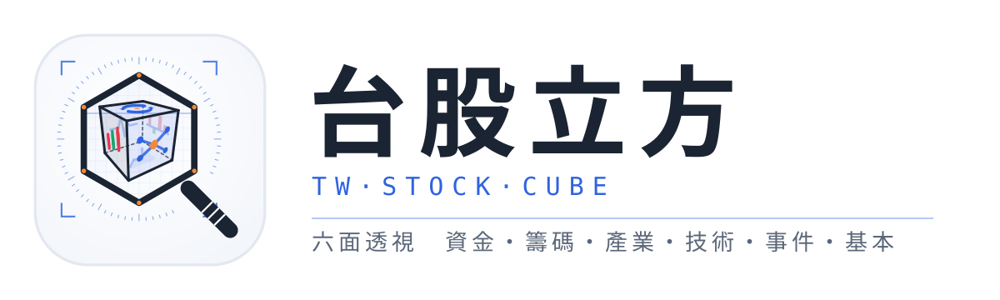
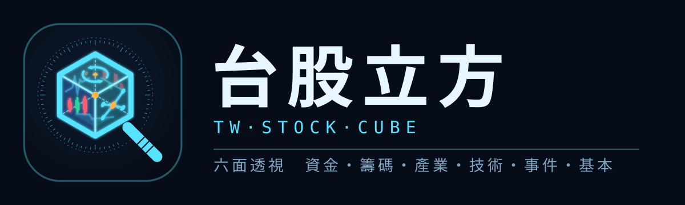
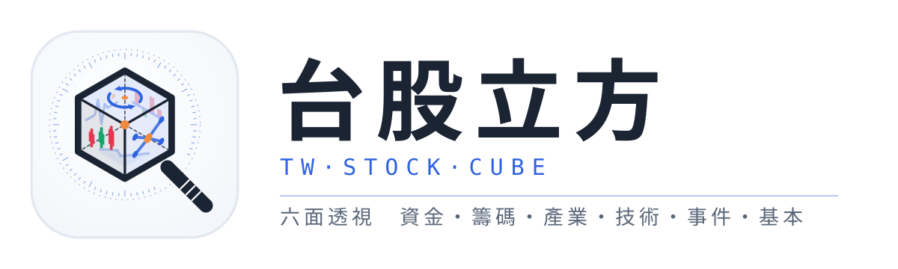